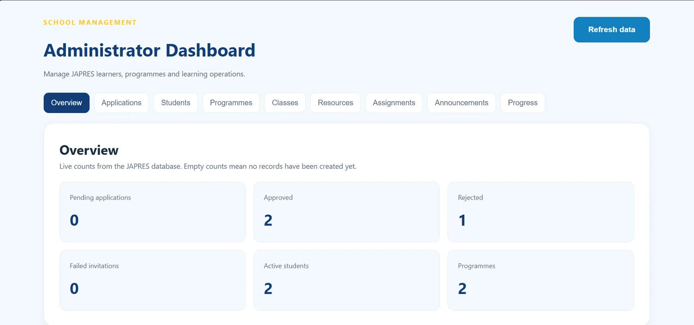

JAPRES Academy
A public-facing school website supported by a student portal and administrative tools.
Project delivered & live



Section 01
Overview
JAPRES Academy is an education website project that brings public-facing school information together with a private student portal. The live project is available for review.
Section 02
Purpose
The goal was to give the school a clearer online presence and provide a dedicated digital area for student-facing information and administrative workflows.
Section 03
Solution & features
- Responsive public websiteSchool information pages that work on every screen size.
- Student portalA dedicated student experience with authenticated access.
- Administrative dashboardStructure for managing portal information.
- Supabase servicesAuthentication and data services behind the portal.
- Contact pathwaysClear routes for enquiries from parents and students.
Project information
- Project type
- Client website & portal
- Technology
- HTML · CSS · JavaScript · Supabase
- Status
- Built and tested
The screenshots show the public website, student portal and administrator dashboard. Personal details are concealed in the student portal image.
See it live
The full JAPRES Academy website and student portal, open for review.
Need something similar for your school?
Discuss a similar education website